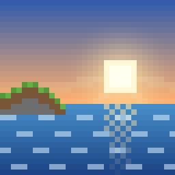

Bender Realism
Make your Minecraft world look more real: rolling waves, real sunlight and long shadows, sunbeams, and movie-style color.
⬇️ Download for Minecraft
For Minecraft Bedrock with Vibrant Visuals (most iPads from 2019 or newer). Works in every world, with or without other add-ons. Free, no ads.
What changes
🌊Real waves
Lakes and oceans roll with moving waves, and sunlight ripples across the bottom. Water gets a natural color, and swamps stay murky.
☀️Real sunlight
The sun crosses the sky at an angle like it does in real life, so shadows stay long and slanted all day, and shady spots are deeper.
🌲Sunbeams
A light haze in the air lets you see rays of light through trees, windows and cave openings.
🎬Movie colors
Colors like a film camera, with a soft glow around the sun all day, not just at sunrise and sunset.
How to put it on the iPad
- In Minecraft, go to Settings → Video → Graphics Mode and pick Vibrant Visuals.
No Vibrant Visuals option? The iPad needs an A12 chip or newer: iPad 8th generation (2020) or newer, iPad Air 3 or iPad mini 5 (2019) or newer, or any iPad Pro from 2018 on.
- Tap Download for Minecraft above, then tap Download when Safari asks.
- Open the Files app, go to Downloads, and tap BenderRealism.mcpack. Minecraft opens and says Successfully imported.
If tapping the file doesn't open Minecraft, tap the Share button and choose Minecraft.
- To use it in every world: Settings → Global Resources → My Packs → Bender Realism → Activate.
Or for just one world: tap the pencil next to the world, then Resource Packs → Available → Bender Realism → Activate.
- Using Bender add-ons? Download them again from the arcade. They're now marked as ready for Vibrant Visuals, because older add-on packs can stop Vibrant Visuals from turning on.
Good to know
- Watch a sunrise or sunset by the ocean, or stand in a forest in the morning to see the sunbeams.
- If the world looks the same as before, check that Graphics Mode says Vibrant Visuals, and turn off any other texture packs one at a time to see if one is switching it off.
- Vibrant Visuals turns off in split-screen. That's a Minecraft rule.
- If the iPad feels slow or warm, lower Render Distance in Settings → Video.
- To go back to normal, deactivate Bender Realism in Global Resources. Nothing in your worlds changes.
- The Nether and the End keep Minecraft's normal look.